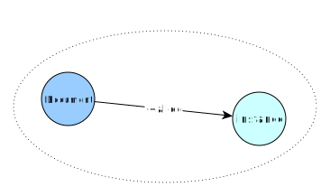

NSObject: +alloc / -dealloc
Lets start with the absolute basics of creating and disposing of
objects. We are talking about objects that are either of the class
NSObject or any of its subclasses.
e.g.
@interface Document : NSObject
@end
Creation and destruction
These are the most basic methods provided by NSObject. A user of a
NSObject derived class, would not actually need to call any of these methods
directly, as they are too low level. But we are building from the ground up:
| Method | Override | Description |
|---|---|---|
+alloc |
NO | Creates an object |
-init |
MAYBE | Initializes the object |
-finalize |
MAYBE | Release resources and owned objects |
-dealloc |
MAYBE | Deallocates the object |
+new |
NO | Convenience combining alloc with init |
Let’s declare a class Document based on NSObject and write the most simple
demo:
#import <MulleObjC/MulleObjC.h>
@interface Document : NSObject
@end
@implementation Document
@end
int main( void)
{
Document *document;
document = [Document alloc];
document = [document init];
// calling -finalize manually, just for demo purposes
[document finalize];
// calling -dealloc manually, just for demo purposes
[document dealloc];
// DO NOT MESSAGE document ANYMORE!
return( 0);
}
An instance of Document is created with the class method +alloc.
+alloc will unfailingly return an object pointer to an instance, whose
content has been zeroed out. You can rely on both facts. If the system runs
out of memory, +alloc will throw an exception.

The next step is the initialization of the instance with -init. -init is
free to return nil though. It’s an indicator that initialization was not
possible. If this can be the case should be noted in the documentation of
a class header file.
The default -init method does nothing but return self:
- (instancetype) init
{
return( self);
}
For illustrative purposes, the code does now, what you never should do,
that is, it calls -finalize and -dealloc manually.
With -finalize you can lop off any references to any other objects that are
kept in properties (more on this later):
- (void) finalize
{
_MulleObjCInstanceClearProperties( self, NO);
}
LAW A NSObject based instance has the guarantee, that it will get an initializing call before autorelease. That being
-initor a variant of init. It is guaranteed that its-finalizemethod will be called once and only once before the object receives a-dealloc.The
-finalizecan happen at any time after-initthough.
Finally -dealloc is called to free the instances memory.
LAW: Once an instance has gone through
dealloc, it must not be messaged again.Doing so is called messaging a zombie and it can crash your program. It will definitely crash, when you set the
NSZombieEnabledenvironment variable toYES, which is recommended during development.
+new
The +new method is essentially a combination of +alloc and -init, which
simplifies the creation of instances a bit. In general you will not use it very
often either, when we introduce +object in one of the next chapters.
Lifetime
The time between the call to +alloc and the final -dealloc of an object is
called the object’s lifetime. We will use this concept later on quite a bit.